|
|
| Audio/video entertainment devices with Linux inside |
(Updated Jun. 29, 2005)
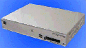Advanced CommunicationsMPEG-4 set-top box -- [Nov. 6, 2002] -- The ECCLE5000 features an MPEG decoder that enables home TVs to replay MPEG-1/2/4 high quality video streams distributed via the Internet or cable. details
Amino AmiNet100 -- Nov. 13, 2003 UK-based Internet protocol (IP) set-top-box (STB) maker Amino's AmiNet100 is barely larger than its own remote control. It uses Espial software to provide an "HTML-on-TV" experience. details.
Amino AmiNet110 -- [Nov. 13, 2003] -- The AmiNet110 resembles the AmiNet100, but adds a number of new interfaces. Amino markets its STBs to IPTV and video-on-demand (VOD) broadcasters around the world. details
Amino AmiNet500 -- [Aug. 31, 2002] -- Amino Communications expects to ship in October a tiny IP-STB (Internet-protocol set-top box) with built-in PVR (personal video recorder) capabilities. The AmiNet500 runs embedded Linux, and can record 40 hours of content. It targets telco's with IP-TV services. detail
Apple iPod with Linux firmware -- [Jun. 23, 2005] -- Installing Linux on your iPod lets you record high-quality audio or play games, easily returning to the stock environment to listen to music. iPod Linux is simple to install on all but the newest iPod models, and requires only 5MB of disk space. Details
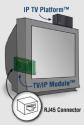Araneo IP TV Platform -- [Apr. 29, 2004] -- Araneo products include an external IP TV Platform based on an IBM PowerPC405 core in conjunction with IBM's STB03xxx and STB04xxx controllers. The Platform uses hardware to decode compressed media streams, with lip synchronization, that are delivered via a fast Ethernet connection. Additional features include PVR (personal video recorder) functions, Web browsing and email, and a full Java virtual machine. details
Archos PMA400 Pocket Multimedia Assistant -- [Feb. 18, 2005] -- a "fourth generation" personal video recorder/player (PVR/PVP) with a 3.5-inch color LCD, 30GB hard drive, wireless Internet access, Qtopia PIM suite, and lots of other cool features, including a Linux SDK. Details here and here
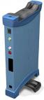Bokks portable media-player -- [Nov. 28, 2001] -- This versatile device connects to a broadband network via DSL, cable, or optical fiber and plugs into a TV to allow email and Internet access. It store movies, music, and other files on its internal multi-Gigabyte hard drive, allowing them to be listened to or viewed whenever the user is near a TV, stereo, or computer. Based on a 266MHz NSC SC1200 system-on-chip processor running Linux kernel 2.4.x. info
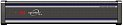Conextion Systems Digital Ambience 1010 -- [Feb. 22, 2005] -- An electronic music manager and player with dual 200GB hard drives. details.
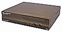Digital Techniques Blackbird -- [Jun. 10, 2005] -- A digital home music server with a Web interface supporting small-screen browsers, the Blackbird is based on off-the-shelf mini-ITX parts, and high-end PCI sound cards. Three Blackbird models have 80-300GB hard drives, lots of networking options, and a web interface supporting control from a wireless PDA. Supported file formats include MP3, MP3PRO, Ogg, WAV, and FLAC, and the device comes preloaded with several Internet radio stations. Details
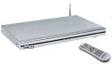D-Link DSM-320 -- [Mar. 20, 2005] -- The DSM-320 and DSM-320RD, which adds a DVD player and card reader, bring network media files to TVs via wired or wireless networks. The players run Montavista Linux, along with closed applications, and have inspired a Wiki-based community of embedded hackers interested in creating open source Linux firmware for them. details
Dream-Multimedia-Tv's "Dreambox" -- [Oct. 9, 2003] -- This $395 Linux-based digital radio and DVB satellite (or cable) receiver offers DVR functions and PC connectivity. A minimalistic, GPL'd Linux-based software implementation has made the DM7000 popular with Linux programmers and TV device hackers. The device's open-source nature has resulted in availability of dozens of plugins, from various conditional access (CA) modules to games and installation helpers. details
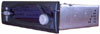empeg car audio player -- [Oct. 24, 2000] -- This consumer audio device is an in-dash digital music player with a capacity of up to 600 hours of high quality music. It connects to a PC (to receive downloaded MP3 files) via USB, Ethernet, or a serial port, and stores music files on a pair of internal laptop-style hard drives. Inside, embedded Linux runs on a 220 MHz Intel StrongARM system-on-chip processor with 12MB RAM and 1MB flash (for bootstrap). There is an option to add an FM tuner. details
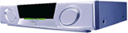EnReach media center -- [Feb. 25, 2002] -- The EMC-300 set-top broadband media center enables digital video recording (DVR), video-on-demand (VOD), and television over IP (IP-TV). The device can also serve as a home media server for in-house or peer-to-peer file and audio/video sharing, and it also includes web browsing and email capabilities. details
Envivio STiNO s-box 4000 STB -- [Sep. 18, 2003] -- This device features a VIA C3 800 MHz CPU in combination with Sigma's MPEG-4 decoder chip solution. It integrates Envivio's MPEG-4 player and is driven by TUXIA's Linux-based iTV Middleware "TUXIA Appliance Synthesis Technology" (TASTE) 3.6. STiNO says the s-box 4000 contains optimized hardware for high-performance MPEG-4 streaming and web browsing. Because of its open hardware and software platform, it can now also support DVB-S and DVB-T applications. details
Equator Babelfish -- [Nov. 12, 2004] -- A hardware/software reference design based on an SoC (system-on-chip) with both RISC-like and DSP-like instructions. The "Babelfish" platform runs Linux 2.6 on a BSP-15 SoC, and targets IP-STBs (set-top-boxes), PVRs (personal video recorders), and digital media adapters. details
FIC Vasilli -- [Jan. 4, 2005] -- A Linux-based portable media player (PMP) that includes a 3.6-inch color LCD screen and a 20GB hard drive, and can play multimedia content downloaded directly from PCs and PVRs (personal video recorders) in a number of formats. details
Galaxis LinuxTV C -- [Sep. 25, 2003] -- An inexpensive STB for satellite reception powered by NEC's EMMA2 STB SoC and Convergence's LinuxTV 2.0 software stack, the LinuxTV C networks with PCs via USB, Ethernet, or Firewire, and supports recording of digital TV on external or internal hard drive (not included). The box will also serve as an DSL router and radio. details
Haier/Freescale UWB media server -- [Jun. 23, 2005] -- Haier Corp. and Freescale Semiconductor have jointly demonstrated a UWB (Ultra-Wideband) high definition (HD) television and digital media server, wirelessly broadcasting HD video and audio streams across a stage. The demonstration occurred at Freescale's annual Technology Forum, and showcased a "critical milestone for wireless home entertainment systems," according to the companies. details
Hauppauge's MediaMVP -- [Oct. 6, 2003] -- This $99 "digital media receiver" is a low cost thin-client device that connects a home PC running Win XP Home, XP Pro, or W2K with home TV and A/V equipment. The MediaMVP can decode mp3s, MPEG-1 and MPEG-2 videos, JPEGs, GIFs and other content for display on TV sets, TV monitors, plasma monitors, or home theater A/V systems, according to Hauppauge. It can be combined with a personal video recorder (PVR) solution such as a Hauppauge WinTV-PVR card for a complete PVR solution. details
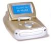Hi-Muse music appliance -- [May 22, 2001] -- This Linux-based device can record, play, and store music from CDs and other sources and provides a simple means to locate, listen to, and store music from Internet radio stations, music portals, and other online sources. Initial prototypes use a Pentium or Celeron x86 CPU, but the design is being revised to make use of Cirrus and TI dual-core (ARM + DSP) system-on-chip processors. The OS is based on a standard Linux kernel with the addition of real-time audio enhancements. info
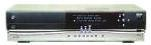HP Digital Entertainment Center -- [Jun. 20, 2001] -- HP's first product in the consumer entertainment device space has Linux 2.4 and the X Window system inside. Its embedded computer is based on a 566 MHz Celeron, with 64MB RAM and a 40GB hard disk, and its interfaces include USB, Ethernet, HPNA, a built-in V.90 modem, stereo audio, and video out for display on a TV. The device can download and record music and videos from the Internet, and can read and copy music CDs onto its internal hard drive. info
i3 Micro Mood Box -- [Apr. 22, 2004] -- This set-top box delivers IP-based live TV, VOD, PPV, music-on-demand, Internet browsing, email, and other interactive services to users' TVs. The device is part of i3's "Mood solution," which includes set-top boxes, streaming servers (for IP TV and video-on-demand), and system management servers. The device is being tested in Belgium. details
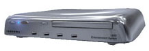Indrema Entertainment System -- [Ju. 6, 2000] -- The Indrema Entertainment System (IES) is a set-top device that converts a TV into a high-end gaming system. The device is packaged in a sleek enclosure with the look and feel of a top-of-the-line VCR. It offers a choice of dialup or broadband Internet access (it has a built-in 10/100 mb Ethernet controller), and comes with a game controller. The embedded computer is based on a high-end x86 processor, plus 64MB RAM and up to a 50 GB hard disk. High speed graphics is generated by means of an upgradeable plug-in module, which initially uses an an NVIDIA GPU. The embedded operating system is DV Linux, an open source Linux port targeted to gaming systems. [Note: this interesting device generated a lot of excitement in the developer and gamer communities, but unfortunately never made it into production.] details
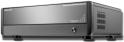Interact-TV Telly -- [Aug. 14, 2004] -- You can get a free SDK with the Telly "home entertainment server," but you won't need to use it to enjoy remote controlled broadband Internet, cable TV, satellite TV, digital audio and video entertainment, and digital home networking. Not to mention DVR, mp3 ripping/burning, jukebox, photo album slideshows, and more. Three configurations: $749 MC800 (details); $899 MC1000 (details); C1200 (details)
Intervideo InstantOn laptops -- [Jun. 1, 2005] -- InterVideo's InstantOn comprises an alternative boot environment for laptops, enabling them to boot quickly into a Linux-based multimedia entertainment appliance. InstantOn supports DVD burning on select notebooks, as well as DVB-T. It is available in laptops from NEC and others, and in barebones PCs from AOpen. Details
iRiver PMP-120 and PMP-140 -- [Oct. 24, 2004] -- The PMP-120 and PMP-140 models offer 20GB and 40GB hard drives, respectively, and 3.5-inch LCD screens supporting video playback in a number of formats. The hardware appears to be identical to iRiver's Windows CE-based "PMC" (portable media center) devices, which are delayed. details
JoboGiga Vu Pro -- [Feb. 23, 2005] -- A tool for digital photo buffs available with a Linux SDK. Based on a 400 MHz Intel PXA255 Xscale processor, the Giga Vu Pro contains a 40 or 60 GB hard drive, plus an appropriate complement of peripherals and interfaces, including a QVGA (320 x 240 pixel) 3.8-inch touch-screen LCD, CompactFlash slot, USB 2.0 mass storage connection, generic USB client connection, built-in speaker, audio output, TV output (PAL/NTSC selectable), joystick, and soft buttons. It can decode and display JPEG, TIFF, and raw formatted photos, as well as being able to play MP3 audio files and MPEG1/2/4 and DivX3/4/5 video files. The unit measures 5.7 x 4.2 x 1.5 inches and weighs 14.82 ounces, and it comes with an internal, rechargeable 2200 mAh battery. details.
JCC iBOX-2 -- [Sep. 7, 2001] -- Japan Computer Corporation (JCC) has developed a new Internet appliance based on National's Geode "set-top box on a chip", running an Embedded Linux operating system. The device contains 16-32MB DRAM and an 8MB DiskOnChip flash disk, and has a built-in Ethernet port. details
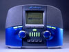Kerbango (3Com) Internet Radio -- [Mar. 21, 2001] -- The Kerbango Internet Radio (Kerbango was acquired by 3Com) connects to the internet via a phone line, Ethernet, or a USB-connected networking interface. Its internal embedded computer is based on an 80 MHz Motorola PowerPC system-on-chip processor along with 8MB of RAM and 8MB of flash storage memory. The Embedded Linux operating system includes a unique "Kerbango Audio Operating System" (KAOS) which provides easy-to-use features for user interface, network setup, etc. In addition to "receiving" radio stations via the Internet connection, the device also contains a conventional FM radio receiver and built-in FM antenna. [Note: This interesting product, which created a lot of interest due to its retro appearance and appealing capabilities, never made it into the market. Although preproduction units were built, they were never sold to the public.] info
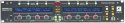Manifold Labs Plugzilla -- [Feb. 1, 2005] -- Linux with real-time patches powers this rack-mount plugin player for audio performers and recordists. Plugzilla runs a 2.4-series kernel, supports eight channels of 24bit/96kHz audio, as well as MIDI, and comes with 130 plugins, such as reverb, distortion, drum machines, and more. details
Matsushita/Panasonic Broadnow set-top box -- [Apr. 15, 2003] -- This broadband-connected TV tuner and PVR plays video, music, and other content over broadband networks such as fiber-to-the-home (FTTH) and ADSL. The unit features some interesting capabilities, such as remotely controlling video recording via email. details
Motorola DCT5000 set-top box -- [Aug. 29, 2001] -- This interactive digital multimedia set-top appliance from Motorola's broadband communications division includes capabilities for personal video recording, streaming media, and home networking. details
NEC AX10 audio/video server -- [Nov. 20, 2002] -- This unique "TV in a PC" is a disk-based recorder for audio-visual applications. It lets consumers view, listen, edit, and save TV programs onto a hard disk or videotape. details
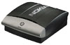Nokia Media Terminal -- [Oct. 19, 2000] -- This device adds a broad range of Internet-based services to a normal TV set. Among the services available are digital audio/video, digital TV, video-on-demand, cached TV programs, web access, email and chatting, games/gaming, and many web-based software applications. The Media Terminal's internal software is based on Linux, the Mozilla open source browser, X Window System, plus a unique user-interface technology called "Nokia Navi bars". The embedded computer is a 366 MHz Intel Celeron CPU along with the Intel 810 chipset, plus 32MB SDRAM and a minimum 20GB hard disk. details
Pace Micro Tahoe DVR -- [Apr. 8, 2005] -- An HD DVR (high-definition digital video recorder) based on Linux, the "Tahoe" offers the best features in its class, Pace says, including a built-in cable modem. Details
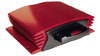PhatNoise PhatBox -- [Nov. 1, 2000] -- The PhatBox car audio system, which won "best overall product" at the Third Annual MP3 Summit, gives consumers the capability to take MP3 music files from their PC and listen to them in the sound system of their car. Its embedded computer is based on a 74MHz Cirrus Logic EP7212 system-on-chip processor, running Embedded Linux. details
Ponto-i Linux jukebox -- [Apr. 13, 2004] -- Rio de Janeiro, Brazil start-up Ponto-i has developed a modern, Linux based jukebox with a retro look reminiscent of the 50s. The "Digipop" jukebox runs a custom Linux distribution based on Debian, along with LinuxBIOS, and uses a mix of custom and commodity PC hardware. details
PRISMIQ MediaPlayer -- [Mar. 18, 2003] -- This "networked entertainment gateway" connects via normal audio/video cables to the user's TV and stereo systems, and also communicates with the home network or PC via wired Ethernet or wireless 802.11b (Wi-Fi). It plays audio and video media files and provides TV-based web surfing, instant messaging, and more. details
Roku High Definition Media Player -- [Dec. 1, 2003] -- Embedded Linux and an open, hacker-friendly architecture power the world's first high definition media player, the $499 Roku HD1000. The brainchild of ReplayTV inventor Anthony Wood, the device could touch off a cottage industry of third-party applications and media packs that work with its Linux-based OS and user-friendly media APIs. Out of the box, the HD1000 can stream MPEG and MPEG2, play music, loop JPEGs, and more -- all at the same time. Roku is selling "Art Packs" of everything from museum-quality art to hot-rod cars as memory cards that work with the device. And, the company will release a C/C++ SDK for the HD1000 before 2004. details
Royal Philips iPronto -- [Apr. 15, 2003] -- This cool gadget combines audio/video, home automation, and home network control capabilities, and can be used to control home theater components, lighting, security cameras, home networks, climate control, and, well, pretty much any other system or device in your home via its IR/RF/Ethernet wired and wireless communications (802.11b). details
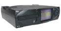SONICblue Rio Central -- [May 10, 2002] -- This high-fidelity home stereo component that stores up to 650 CDs worth of music on its built-in 40GB hard drive is said to be "as simple to use as a CD player, but as smart as a PC" -- a Linux-based PC, that is! Inside, there's a 206MHz Intel StrongARM processor along with 16MB of system RAM running an Embedded Linux OS derived from Debian/ARM sources. info
Samsung Miniket -- [Jan. 20, 2005] -- A tiny, high-quality diskless camcorder that doubles as a digital camera, mp3 player, voice recorder, data storage device, and web cam. The Miniket runs a 2.6-series "ARM-no-MMU" uClinux kernel that can boot to a shell in 80msec. details
Shinco Medaillon -- [Oct. 14, 2004] -- A French company that claims to be the world's largest manufacturer of portable DVD players has added a unique capability to its medallion-shaped portable MP3 players. New "Z2" models of Shinco's "Medaillon" (French spelling) line can be used as USB storage devices that boot PCs into embedded Linux. details
 Siemens DVB-T receiver prototype -- [Mar. 15, 2005] -- This handheld Linux device doubles as a mobile phone and digital video broadcast (DVB-T) receiver that can record and time-shift digital content. Details Siemens DVB-T receiver prototype -- [Mar. 15, 2005] -- This handheld Linux device doubles as a mobile phone and digital video broadcast (DVB-T) receiver that can record and time-shift digital content. Details
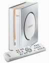Siemens m740 -- [Mar. 24, 2005] -- A Linux-based digital STB (set-top box) available in Europe that has attracted a community of Linux hackers, the Siemens Gigaset M740 AV can decode satellite and terrestrial DVBs (digital video broadcasts). It supports PVR functionality through an external USB hard drive. details.
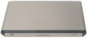Siemens Speedstream 8xxx -- [Nov. 23, 2004] -- An all-in-one Linux-based device providing a range of home gateway and entertainment functions. It targets "triple play" (voice, data, video) network operators, who can choose from several processors and DSP types, depending on their application. details
Sonos Digital Music System -- [Jan. 6, 2005] -- A Linux-based home music distribution system based on "secure peer-to-peer wireless mesh" networking technology. Sonos says its Digital Music System can route the same or different songs, sourced from any connected computer, to as many as 30 audio output devices simultaneously. Details here and here.
Sony CoCoon PVR -- [Nov. 6, 2002] -- This Internet-connected personal video recorder (PVR) is reportedly based on a 350MHz MIPS processor, and it has an internal 160GB hard drive that provides 100 hours of programming (expandable to 320GB). details
Sony Playstation 3 -- [Jun. 13, 2005] -- Sony will position its next-generation gaming console as an "entertainment supercomputer" that can edit videos, manipulate photos, and more, thanks to interchangeable hard drives pre-installed with task-based Linux operating systems of various kinds, according to a Gamespot translation of an interview in a Japanese-language technical magazine. The Playstation 3 is expected to ship in Spring of 2006. Details
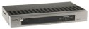StreetFire Sound RBX1600 -- [Oct. 25, 2004] -- The RBX1600 adds a network interface to inexpensive consumer audio CD jukeboxes from Sony. The device has enabled two MIT students to relaunch their believed-to-be-legal music sharing network, "Library Access to Music Project" (LAMP). details
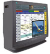Sylvania Internet/TV -- [Mar. 8, 2001] -- This new TV set from Sylvania Computer Products represents the first in a new consumer product category: the "Internet/TV". It's got a built-in Internet appliance, provides an SVGA-resolution display (800 x 600), and has interface connectors for video, audio, phone line, and Ethernet. Who knows -- maybe this Internet/TV is just the ticket for Internet access by the "other half" of all Americans who don't own a PC? details
Terapin Mine -- [Dec. 9, 2002] -- This handheld, Internet-enabled, personal data storage and record/playback device is based on an embedded PowerPC processor. A built-in 10 GB HDD holds thousands of digital photographs/audio tracks or can be used as a temporary storage or for carrying data from here to there. details
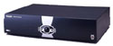TiVO Personal TV -- [Jun. 12, 2000] -- The TiVO "personal video recorder" represents what may well be the most well known Embedded Linux system in existence. It's also one of the first consumer appliances to make use of Embedded Linux. The device is based on a 54 MHz PowerPC 403GCX processor with 16MB of RAM, plus a large capacity hard disk for up to 30 hours of TV program storage. Surprisingly, video is not generated in a computer-like manner but is instead based on a graphics rendering chip. Hence, the device contains a home-grown port of Embedded Linux, but neither uses nor requires either a windowing system or a GUI framework. details
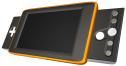Veritouch iVue -- [Jun. 24, 2004] -- Veritouch's iVue is a portable Linux-powered media player, video game player, and personal file storage device featuring multi-user support, biometric authentication, and pervasive security. Though it has yet to launch, the device has already drawn heated criticism and even ridicule from anti-DRM (digital rights management) quarters. However, the device's innovative and pervasive security features may also impress some digital rights advocates. details
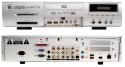Video Without Boundaries MediaRead 4000 -- [Sep. 19, 2003] -- VWB's MediaReady 4000 device, expected Q4, 2003 and already licensed by Lafayette Electronics, is a convergent device based on embedded Linux which unifies feature-rich TV, Internet, email, karaoke, MP3/CD/DVD/MPEG-1/MPEG-2/MPEG-4 playback, and local and networked digital storage. It is based on the MediaReady Convergent Software Suite, which the companies say integrates consumer electronics chip-based media functionality with PC motherboard technology. details
VT Media set-top box -- [Apr. 8, 2002] -- The highly compact Linux-based VT100 set-top box enables several data streams, including Ethernet 10/100, to be converted to composite analog RF data streams or digital S-Video data streams compatible with all standard TV sets. details
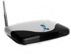X-Digital Systems FlikIt IP-STB -- [May 24, 2004] -- X-Digital Systems (XDS) has launched what is believed to be the first device to run Linux natively on a single-core digital signal processor (DSP). The FlikIt IP-STB (Internet protocol set-top box) runs Softier's "MediaLinux" on a Texas Instruments TMS320DM64x DSP. It targets corporate communications, and is available as a reference design or device. details
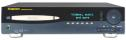ZapMedia ZapStation -- [Mar. 22, 2002] -- ZapMedia's first product is a Linux-powered audio/video jukebox for serious consumer audiophiles. Beneath that stereo receiver look-and-feel lurks an 800MHz Intel Celeron equipped with 128MB RAM and a 30GB hard drive, running Linux kernel 2.4. The GUI is based on XFree86, Qt, Java, and a customized Fresco Browser. info
Zupera mobile A/V player -- [Nov. 4, 2004] -- Zupera Technology has used a 2.6-series embedded Linux kernel to build a handheld audio/visual player set for volume production in January, 2005. The 30GB "Zupera" will be available with a 5.7- or 7-inch LCD touchscreen display, along with software for playback of a variety of multimedia files. details
Return to top of guide
 |
|
|
|
|
|
|
|
 Use of this site is governed by our
Terms of Use
and Privacy Policy.
Except where otherwise specified, the contents of this site are copyright © 1999-2005
Ziff Davis Publishing Holdings Inc.
All Rights Reserved. Reproduction in whole or in part without permission is prohibited. Linux is a registered trademark of Linus Torvalds. All other marks are the property of their respective owners.
Use of this site is governed by our
Terms of Use
and Privacy Policy.
Except where otherwise specified, the contents of this site are copyright © 1999-2005
Ziff Davis Publishing Holdings Inc.
All Rights Reserved. Reproduction in whole or in part without permission is prohibited. Linux is a registered trademark of Linus Torvalds. All other marks are the property of their respective owners.


 news feed
news feed